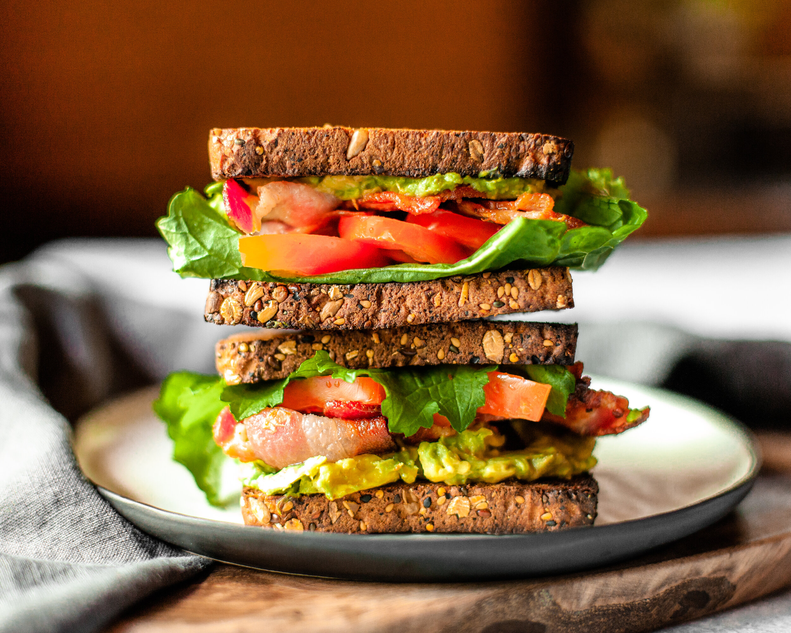
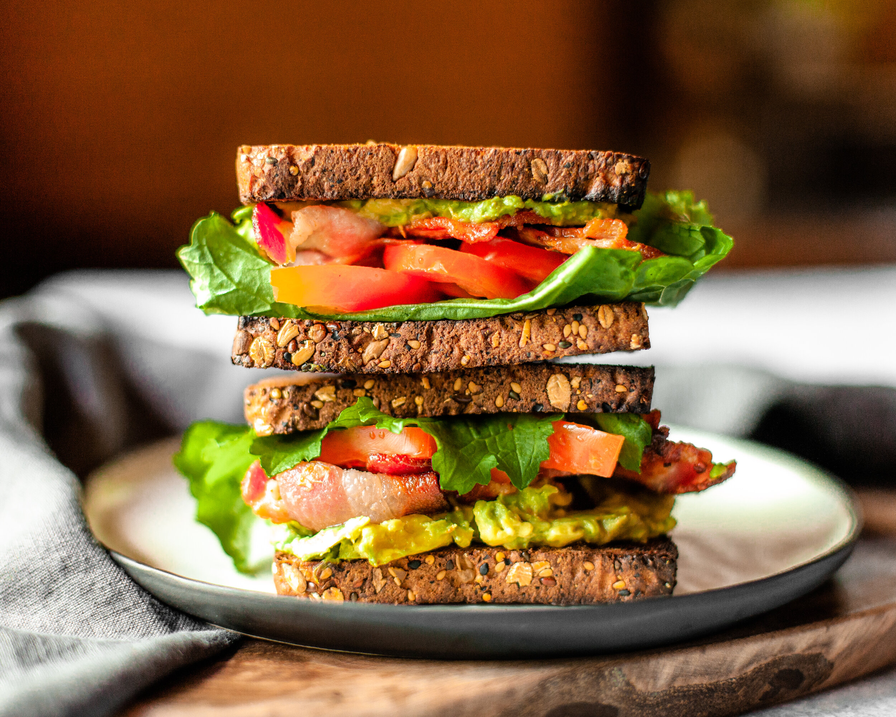
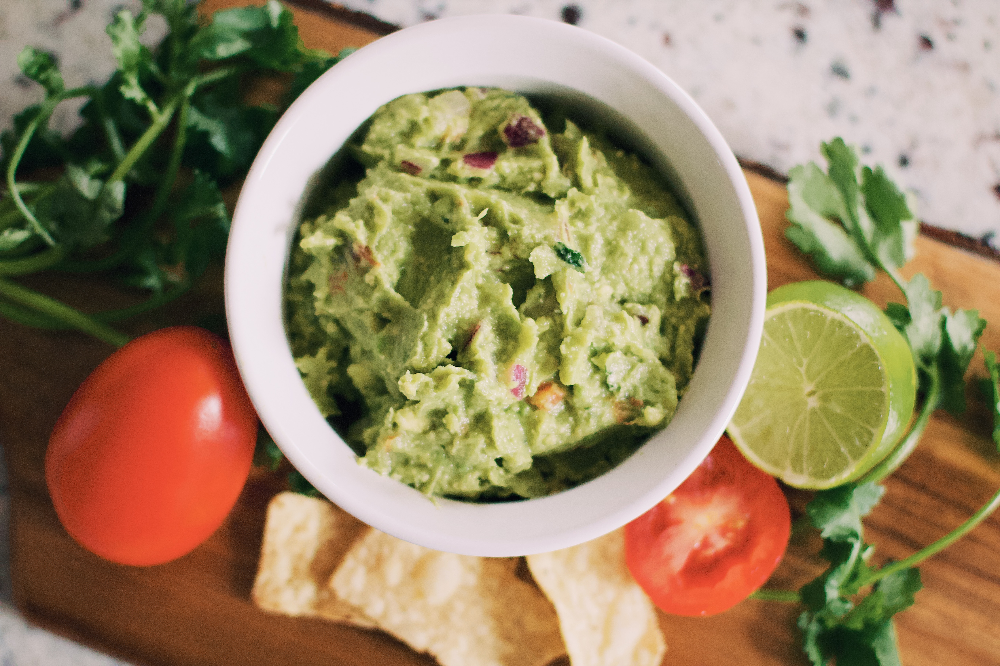

BLAT Sandwich
Origin: America Source: Yiran Zheng Category: Main
A BLAT sandwich is a delicious twist on the classic BLT, featuring crispy bacon, fresh lettuce, ripe tomatoes, and creamy avocado, all sandwiched between slices of bread for a satisfying blend of flavors and textures.
Recipe Ingredients
- Avocado
- Bacon
- Lettuce
- Tomato
- Bread
- Mayo
Recipe Steps
- Toasted bread slice spread with mayo
- Put sliced acovado, bacons, sliced tomatoes, lettuce on one spread of bread
- Put the other slice of bread at the top
Additional Food Images

 

Guacamole
Origin: Mexico Source: Yiran Zheng Category: Appetizer Guacamole is a Mexican dip made from mashed avocados, tomatoes, onions, cilantro, lime juice, and chili pepper, creating a creamy, zesty, and versatile condiment often enjoyed with tortilla chips, tacos, and more.
Recipe Ingredients
- Avocado
- Lime
- Salt
- Onion
- Tomato
- Cilantro
Recipe Steps
- Slice three ripe avocados in half
- Scoop them into a mixing bowl
- Use a fork to gently mash them
- Add the onions, tomatoes, cilantro, jalapeno pepper, garlic, lime juice and salt and stir everything together.
Additional Food Images


Chinese Jiaozi
Origin: China Source: flour, pork, and cabbage Category: Main Dish
Chinese dumplings (Jiaozi, 饺子) are stuffed parcels made of unleavened dough and savory fillings consisting of minced ingredients like meat, egg, tofu, or vegetables. They can be boiled, pan-fried or steamed.
Recipe Ingredients
- Flour
- Water
- Pork
- Cabbage
Recipe Steps
- Dough
- Filling
- Folding
- Cooking
- Dipping sauces
Additional Food Images